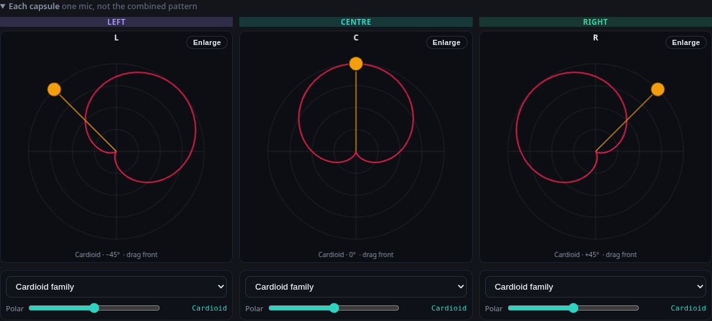
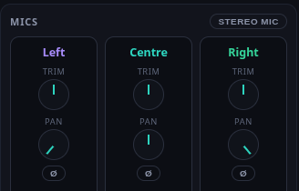
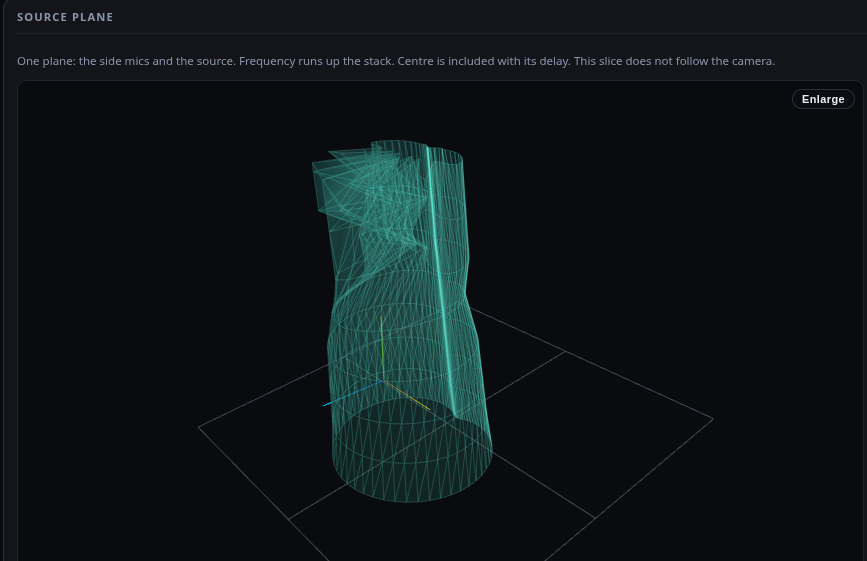
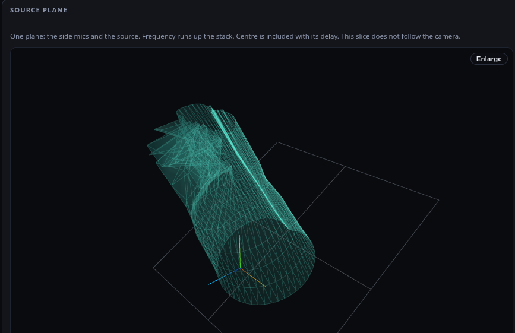

One shared spectral map (static/js/spectrum_colors.js) used by Source radiation, the Mic rings, Polar and the legends. Low = red, through orange, yellow and green, high = blue/violet. The 20 Hz and 16 kHz rings extend it (deep red, violet).
2 · Each-capsule lobes mic_desk.js:730, 744 vs 561

XY 90°: the L lobe points right while its amber front dot is at −45° (left). Drag moves the dot one way and the lobe the other.
Use cx + S·r·sin (S = RoomMath.YAW_X_SIGN = +1) like polarFrontPx and the pointer. The lobe then sits on the dot. In Measured mode the family and polar controls say why they are locked (SM57 is a fixed cardioid). Picking a Bypass or Assumed colour, or a multi-pattern preset, unlocks them.
5 · Pan / trim knobs app.css:1221-1250

An invisible horizontal range input over a 32 px dial. Vertical drag: no change. Click left edge → −12 dB / pan −1. A 5 px drag → +7.5 dB / pan +0.63. 17 px = full range. No wheel, no double-click reset.
A real rotary: pointer-capture vertical drag (200 px = full range), Shift = fine, wheel = one step, double-click = 0 dB / centre, arrow keys, no jump on click, 44 px hit area, the value shown while dragging. One shared knob.js for trim, pan and width.
7 · Head rows app.css:295, 318
headPresetRow and headYawRow show in ORTF and Mono (hidden=true but display:grid/flex). The same leak shows empty capsuleStackListen on Mic and pathsModeRow on Lattice.
Add [hidden]{display:none!important} at the top of app.css. Re-run the hidden audit (scripts/hidden_audit.py): expect 0 visible [hidden] elements on every tab × setup.
8 · 3D graph leans polar_field.py:256-289, 514, 583


Default plane = horizontal at mic height (the mics have no pitch control). Chip “Tilt to source” keeps today’s L-R-source plane for experts.